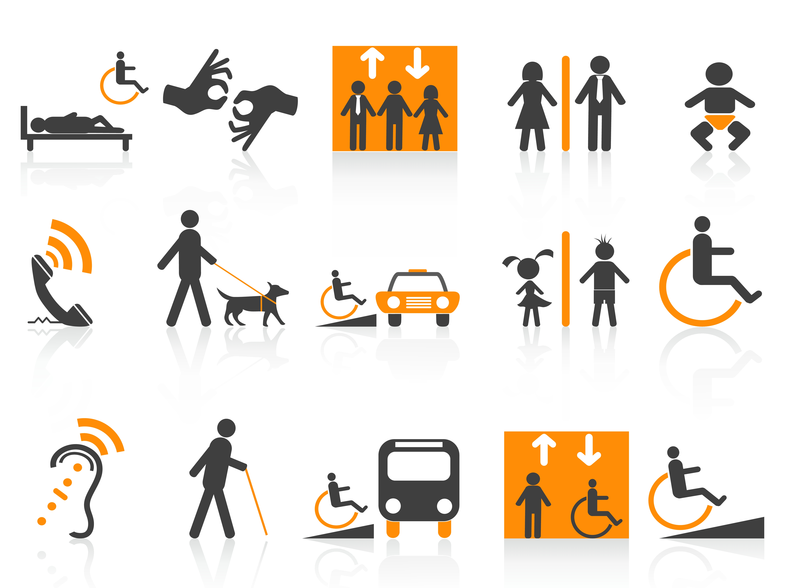
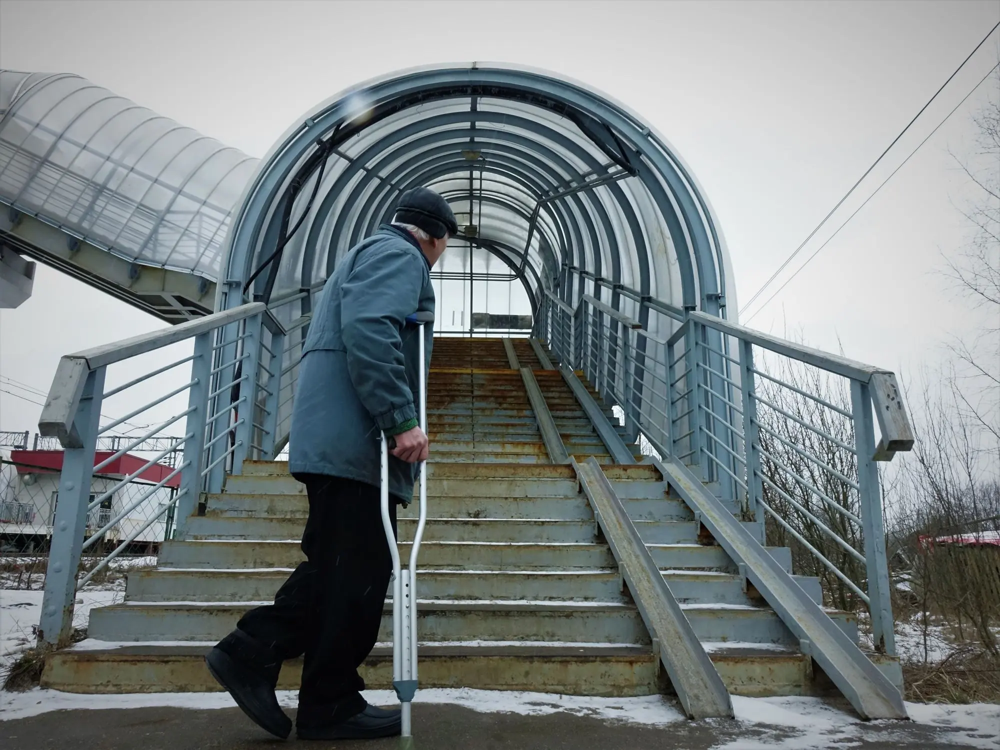

Hva er Uu (Universell utforming) spørsmålene under vill svare på det
Universell utforming skal gjøre at alle skal kunne bruke en løsning, uavhengig av funksjonsevne. Et eksempel på universell utforming kan være en rampe til inngangen til et bygg. Nettsider bør være laget slik at personer med syns- eller hørselsutfordringer kan bruke dem.
God kontrast mellom tekst og bakgrunn gjør innhold lettere å lese. Universell utforming gjør samfunnet mer tilgjengelig og inkluderende.

Hva kan være en konsekvens dersom vi lar være å forholde oss til universell utforming
For eksempel, hvis en nettside har dårlig universell utforming, kan det være vanskelig eller umulig å bruke den for personer med syns-, hørsels- eller bevegelsesnedsettelser.
Det kan også føre til at man bryter loven og får bot eller straff.

Hvem er Uutilsynet, og hva er deres primæroppgaver?
Uutilsynet er myndigheten som fører tilsyn med universell utforming av IKT i Norge. De kontrollerer at nettsider, apper og andre digitale løsninger følger kravene, og de gir veiledning om hvordan løsningene kan bli tilgjengelige for alle.